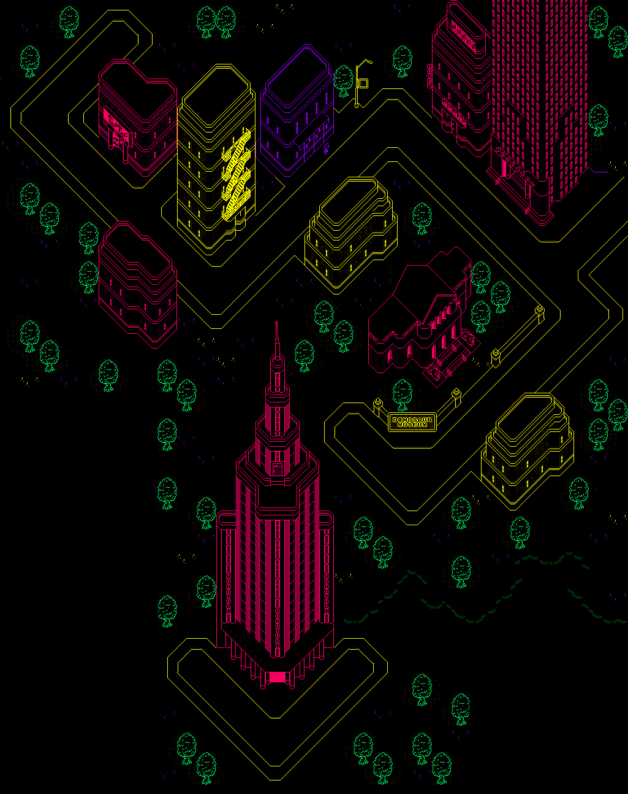

Monotoli Building
Fourside's tallest tower, 48 floors high, with a private rooftop helipad (currently empty).


Population: 313,003
Average rainfall: 32 inches
Number of parks: 10
Eagleland's biggest city.
Fourside is a bustling metropolis, and it's where you'll find the tallest tower: the Monotoli Building. A few years ago, someone borrowed the helicopter from its roof and never brought it back.
Something is always happening here.
Press play to hear the official music of Fourside.
The Tourism Board describes it as "the feeling of hailing a cab after a show."
Press play to hear the mysterious music of Moonside.
The Tourism Board describes it as "...???"
Fourside's tallest tower, 48 floors high, with a private rooftop helipad (currently empty).
Live music and shows most nights. The Runaway Five are a local favorite, so book ahead.
Floor after floor under one roof. Pick a meeting spot in case your group splits up.
Dinosaur skeletons and a gift shop. A reliable rainy-day option.
The best coffee this side of the desert. Please don't ask about the back room.
Fresh croissants every morning.
Double burgers available in the lobby for late arrivals.
Delivery only. Phone in your order from almost anywhere and they'll come find you.
Fourside has never been better. Please disregard any earlier reports.